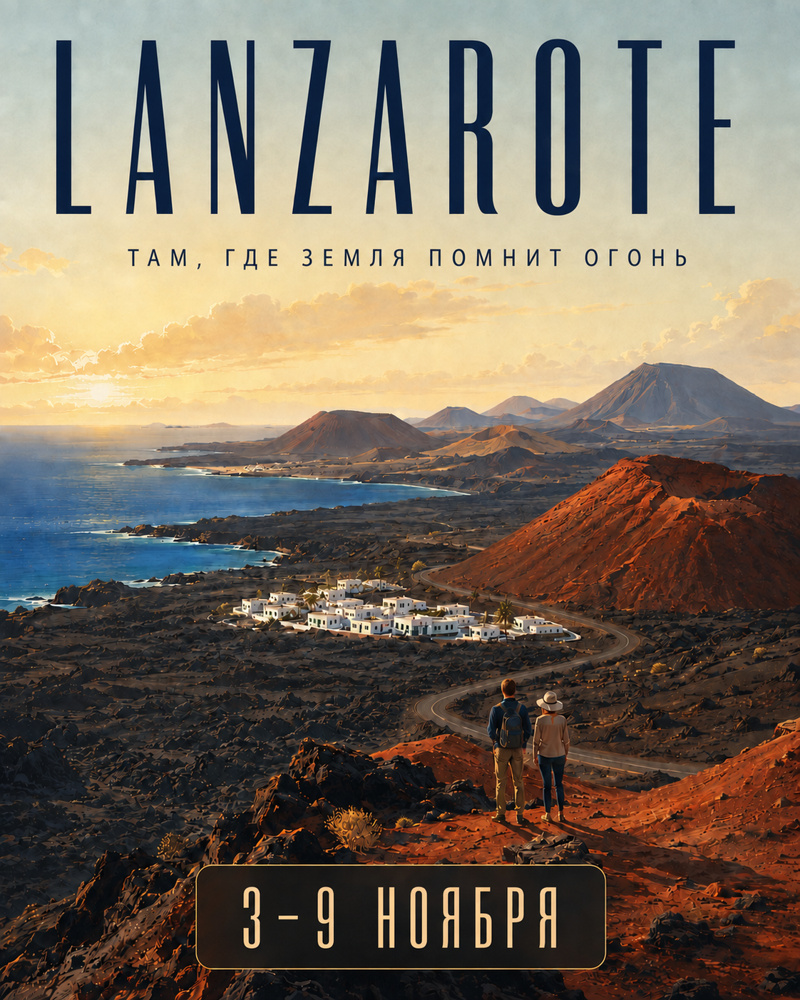
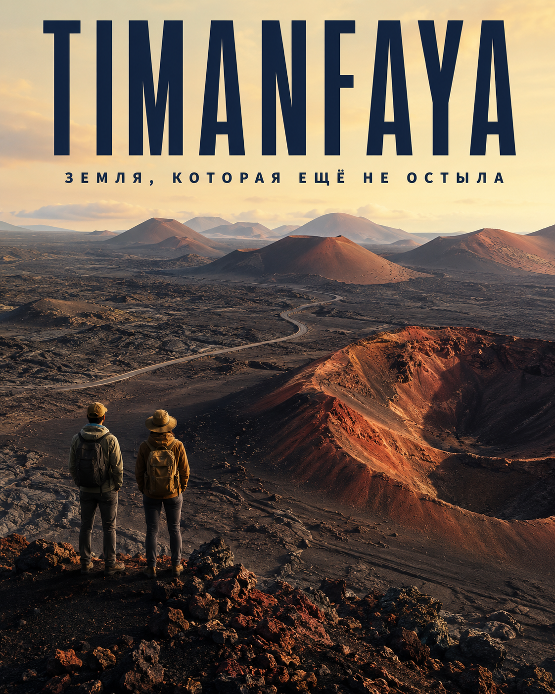
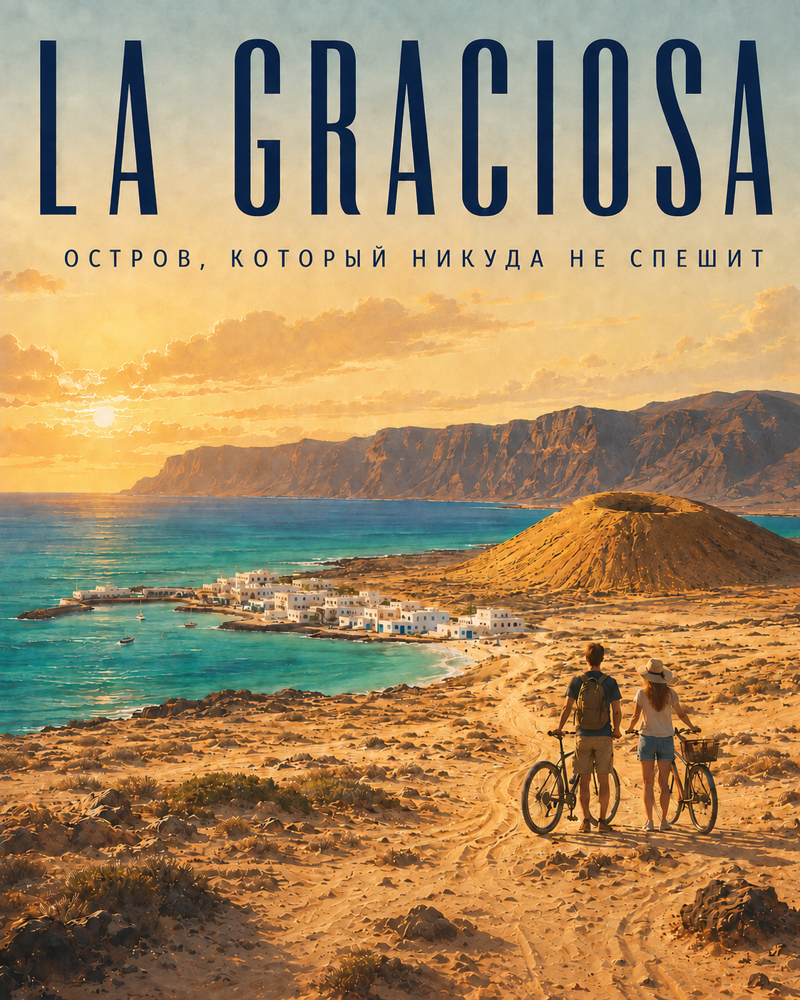
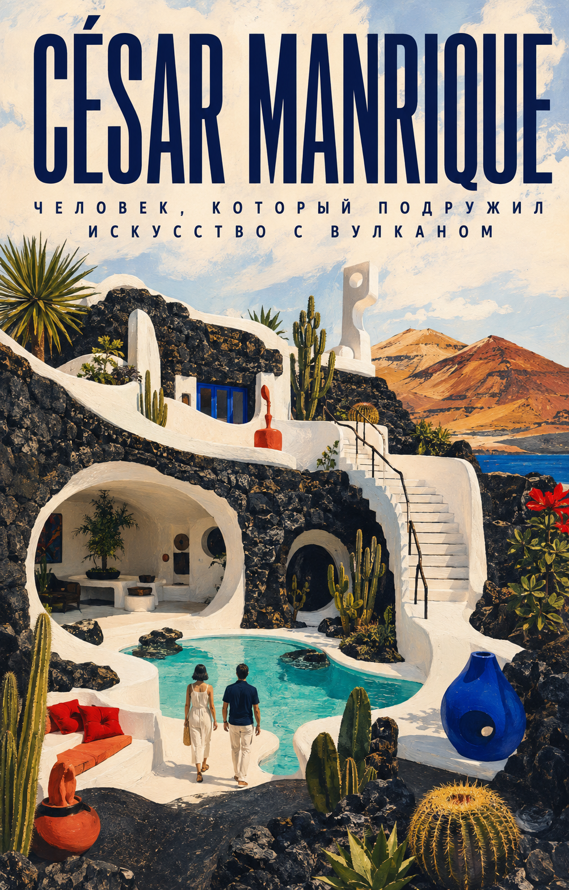
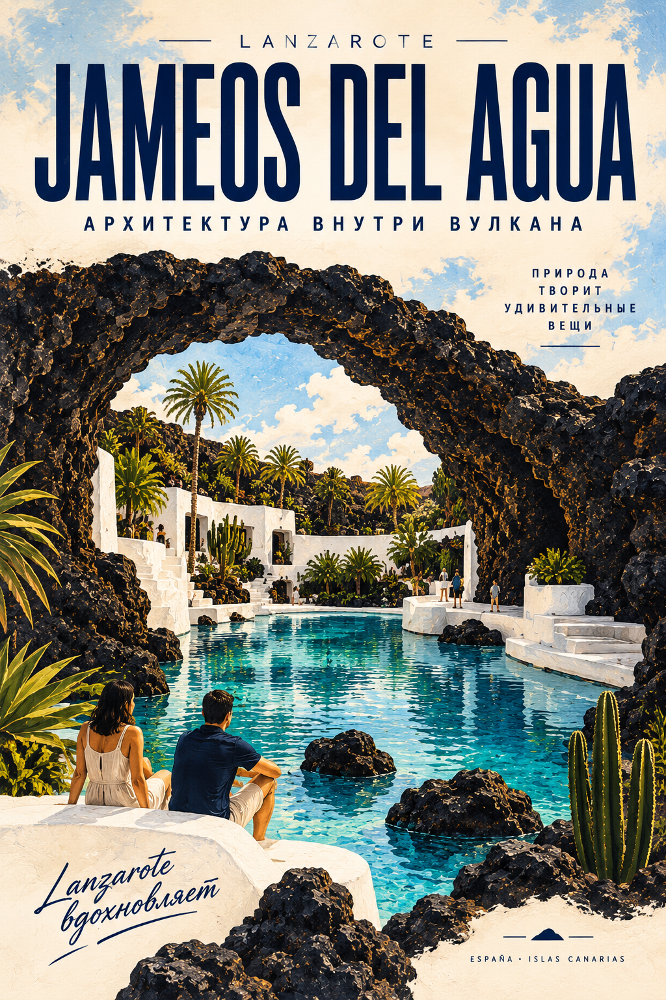
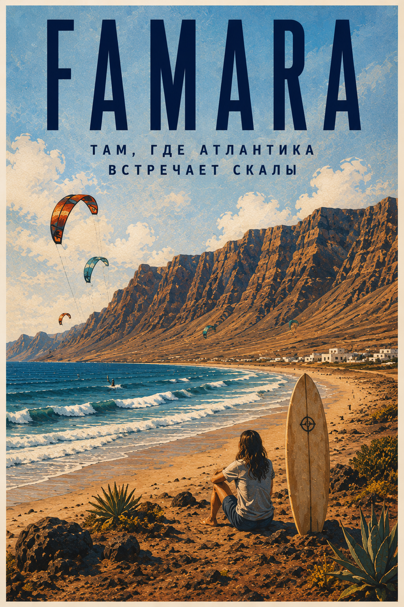
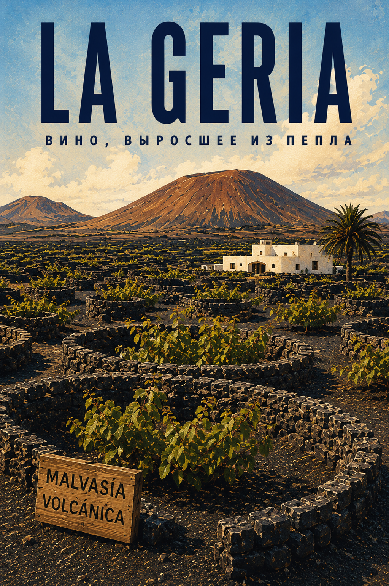
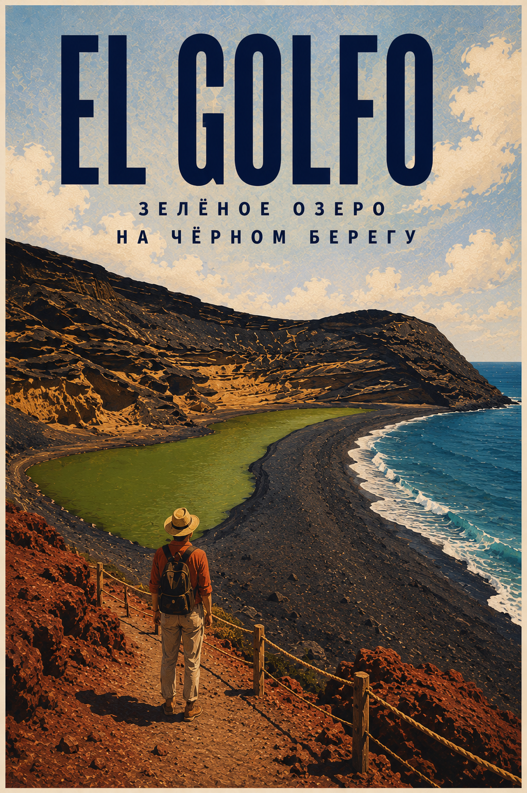

ПРИЛЁТ ОКЕАН ШАМПАНСКОЕ
Прилёт на Лансароте, машина, дорога к океану и первый вечер на острове.

Семь дней среди лавовых полей, океана, белой архитектуры и редких по красоте закатов. Место, куда можно прилететь обычным самолётом и несколько раз за день поймать себя на мысли, что Земля выглядит подозрительно неземной.

Лавовые поля, кратеры и дорога через национальный парк.
Порядок поездок может немного меняться из-за погоды и местных условий. Оставляем себе право свернуть туда, где сегодня особенно красиво.
Прилёт на Лансароте, машина, дорога к океану и первый вечер на острове.
Jameos del Agua, Cueva de los Verdes, Jardín de Cactus и Mirador del Río. День Цезаря Манрике.
Famara, Caleta de Famara, Caletón Blanco и места Манрике.
Timanfaya, El Golfo и Los Hervideros. Лавовые поля, кратеры и вулканический берег.
Паром из Órzola, велосипеды, песчаные дороги, океан и пляжи.
Свободный день для пляжа, прогулок и тех мест, куда захочется вернуться.
Последнее утро у океана и дорога домой.

Полчаса на пароме, и ритм становится совсем другим.

Художник, архитектор и главный визуальный автор Лансароте. Его пространства соединяют лаву, белые стены, воду и растения.

Лавовая труба превращается в сад, подземное озеро и почти сюрреалистическое пространство.

Километры песка под огромными скалами. Серферы, ветер и Атлантика.

Виноград здесь прячут в круглых углублениях среди чёрного вулканического пепла.

Зелёная лагуна рядом с чёрным вулканическим пляжем и Атлантикой.
6 ночей на острове. Проживание, автомобиль и насыщенная программа уже собраны в один маршрут.
Проживание, автомобиль, топливо, парковки, переезды по острову, основные экскурсии и сопровождение.
Авиабилеты, багаж, питание, страховка, личные расходы и дополнительные активности.
Маршрут собран так, чтобы увидеть главное и оставить место для случайных находок.
ЗАНЯТЬ МЕСТО →